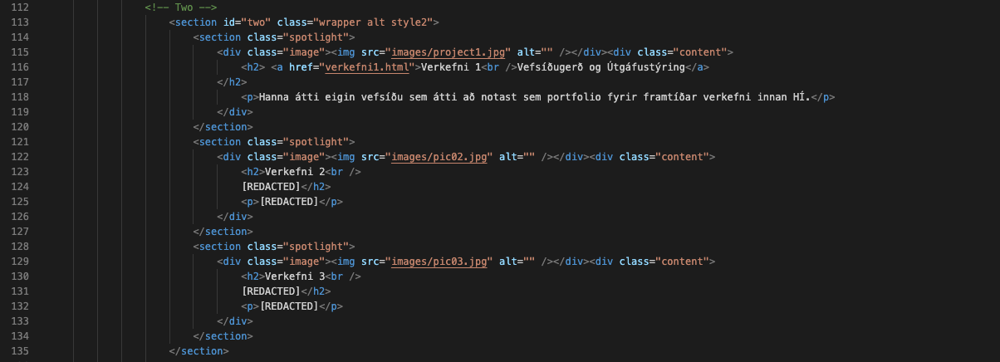
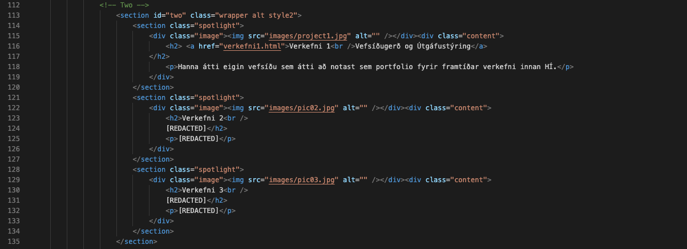

Verkefni 1
Vefsíðugerð og Útgáfustýring
Uppsetning
Ég byrjaði á því að sækja Spectral sniðmátið frá HTML5UP (https://html5up.net/spectral) og hlaða niður möppunni á tölvuna. Síðan opnaði ég möppuna í Visual Studio Code (File → Open Folder) til að tryggja að allar slóðir (paths) í verkefninu virkuðu rétt, þ.e. images/, assets/ o.s.frv.
Næst setti ég upp Live Server viðbótina (extension) í VS Code og ræsti síðuna með því að hægri smella á index.html og velja “Open with Live Server”. Þá fæ ég staðbundna vefslóð (t.d. 127.0.0.1:5500) sem uppfærist sjálfkrafa þegar ég vista breytingar. Þetta flýtir mjög fyrir vinnu því ég sé strax áhrif á útlit og uppsetningu.
Setja upp .css skjal fyrir breytingar.
Til að halda verkefninu snyrtilegu og forðast að breyta upprunalega main.css skránni bjó ég til nýja skrá: assets/css/custom.css. Hugmyndin er að allar sérsniðnar breytingar fari í custom.css svo auðvelt sé að rekja hvað var breytt og einnig svo uppfærslur á sniðmátinu verði einfaldari seinna.
Til að custom.css taki gildi þarf hún að vera hlaðin inn í HTML eftir main.css. Ég bætti því við í <head>
í index.html (og einnig í verkefni1.html):
<link rel="stylesheet" href="assets/css/main.css" />
<link rel="stylesheet" href="assets/css/custom.css" />
Þar sem custom.css kemur á eftir main.css, yfirskrifar hún "stíla" þegar ég nota nákvæmari selector eða !important.
Þetta var sérstaklega mikilvægt fyrir banner-bakgrunn, hnappa og liti.
Breytingar á forsíðunni
Hér vann ég mikið með ChatGPT til að fá hugmyndir, hjálp við CSS-kóða og til að bæta myndefni. Markmiðið var að móta “Briem Imperium” útlitið úr “Black & Gold Marble Roman” þema.
Bakgrunnsmynd á forsíðu
Fyrst breytti ég titli síðunnar (browser tab) og helstu fyrirsögnum í
index.html. Síðan skipti ég um bakgrunn í banner hlutanum með því að
yfirskrifa #banner í custom.css og vísa í nýja mynd í
images/ möppunni.
Upprunalega hugmyndin af bakgrunninum var fengin af eftirfarandi síðu: Black & Gold Marble (rawpixel) . Myndin var til að byrja með mjög óskýr sem bakgrunnur, svo ég lét ChatGPT búa til skýrari/hærri upplausn (cmarble.png) sem hentaði betur í stað Spectral banner.
Til að bæta læsileika texta var settur linear-gradient ofan á myndina: (hugmynd frá ChatGPT)
.css
#banner {
background-image:
linear-gradient(
rgba(0, 0, 0, 0.55),
rgba(0, 0, 0, 0.65)
),
url("../../images/cmarble.png");
background-size: cover;
background-position: center;
background-repeat: no-repeat;
}
Táknmynd fyrir ofan titil (Parþenon táknið)
Til að bæta útlit síðunnar enn fremur var Font Awesome táknmynd sett fyrir ofan
titilinn, Briem Imperium.
Útlit merkisins var stillt í custom.css þannig að hún
væri miðjuð, í réttri stærð og með réttum lit:
Táknmyndin var bætt inn í index.html innan #banner hlutans,
beint fyrir ofan titilinn, með eftirfarandi HTML-kóða:
<i class="icon solid fa-landmark hero-icon"></i>
Til að tryggja að táknmyndin birtist rétt var hún síðan stíluð í
custom.css. Þar var hún miðjuð, stækkuð og gefin réttur litur
til að passa við dökkan bakgrunn forsíðunnar:
.css
#banner .hero-icon {
display: block;
font-size: 2.5rem;
color: #ffffff;
margin-bottom: 0.75em;
opacity: 0.9;
}Favicon (tákn í vafraflipa)
Ég bætti einnig við favicon (táknmynd í vafraflipann). Þá fékk ég ChatGPT til að hanna mynd af rómverskri styttu og aðlaga hana þannig að hún virkaði sem favicon.
Til að favicon birtist rétt í vöfrum þurfti að vista myndina sem
32×32 PNG skrá og setja hana í images/ möppuna.
Því næst var bætt við tengingu í <head> hluta HTML-skránna.
Þetta var gert bæði í index.html og verkefni1.html:
<link rel="icon" type="image/png" href="images/favicon-v3.png">
<link rel="shortcut icon" type="image/png" href="images/favicon-v3.png">
Í ferlinu kom í ljós að vafrar geyma favicon mjög lengi í minni (cache). Því þurfti stundum að gera “hard refresh”, opna síðuna í private/incognito glugga eða breyta nafni myndskrárinnar til að tryggja að ný útgáfa faviconins birtist rétt.
Ferilskrá-hnappur (CV button) og hover-vandamál
Ég breytti “Activate” hnappi, sem fylgdi með templatinu, í Ferilskrá-hnapp sem opnar PDF skrá
með ferilskrá í nýjum flipa. Ég sá þetta á vefsíðunni hjá Sigurði Patrik og fannst það cool.
Til að halda verkefninu skipulögðu var búin til sérstök
mappa assets/cv, þar sem skjöl (PDF) eru geymd aðskilin myndunum.
(images) og öðrum gögnum.
Þetta var einfallt smekksatriði til að gera verkefnið skýrara í uppbyggingu og auðveldara að
viðhalda, sérstaklega þegar fleiri skjöl eða útgáfur af ferilskrá bætast við.
Hnappurinn vísar því í skrána assets/cv/cv_BKB.pdf.
Í HTML (innan #banner á forsíðunni) var hnappurinn skilgreindur innan <ul class="actions special"> með
eftirfarandi kóða:
< .html
a href="assets/cv/cv_BKB.pdf"
class="button primary cv-button"
target="_blank"
rel="noopener">Ferilskrá</a>
Við hönnun hnappsins var notaður sérstakur klasinn cv-button til að geta
stílað hann sérstaklega án þess að hafa áhrif á aðra hnappa sem fyldgu með sniðmátinu. Þetta var svo í raun
tilgangslaust, því ég eyddi öllum hinum hnöppunum seinna meir.
Markmiðið var að samræma lit hnappsins við gulltóna þema síðunnar.
Í prófunum kom þó í ljós að Spectral sniðmátið notar :before pseudo-element
sem overlay á hnöppum, sem yfirskrifar hefðbundinn hover-lit. Þannig í stað þess að fá dekkri gull litinn, kom hinn hefðbundni
appelsínuguli litur fram við hover.
Því dugði ekki að breyta aðeins bakgrunnslit hnappsins sjálfs. Ég spurði ChatGPT um lausn á þessu vandamáli.
Lausnin var að skilgreina bæði hnappinn og :before overlay-ið sérstaklega
í custom.css, bæði fyrir venjulegt ástand og við hover:
#banner .cv-button {
background-color: #b08d57 !important;
color: #ffffff !important;
border: none !important;
}
#banner .cv-button:before {
background: #b08d57 !important;
}
#banner .cv-button:hover,
#banner .cv-button:focus,
#banner .cv-button:active {
background-color: #9a7744 !important;
color: #ffffff !important;
}
#banner .cv-button:hover:before,
#banner .cv-button:focus:before,
#banner .cv-button:active:before {
background: #9a7744 !important;
}
Að þessu loknu virkaði hnappurinn eins og ætlað var, með gullnum lit við hover og opnaði ferilskrána í nýjum flipa.
Hér má sjá skjáskot af HTML-kóðanum fyrir banner-hlutann á forsíðunni
eins og hann var útfærður í index.html. Með því að nota skjáskot
má sjá nákvæmlega hvernig kóðinn var byggður upp og hvernig hann tengist
CSS-stílunum sem lýst er hér að ofan.
„Um mig“ hluti og táknmyndir
Í „Um mig“ hlutanum var útlit síðunnar aðlagað frekar að heildarþema vefsins. Notaðar voru Font Awesome táknmyndir ( fontawesome.com ). Sjálfgefna Spectral sniðmátið notar demantslaga ramma utan um táknmyndir. Mig langaði að halda því útliti en breyta myndunum. Ég valdi þar með tákn sem pössuðu meira við það sem ég vildi koma á framfæri í textanum um mig, þ.e. áhugasvið í flug- og geimverkfræði, menntun og tengsl við eðlisfræði.
Ég skildi rammana eftir óbreytta fyrir utan litina. Þá aðlagaði ég að þema síðunnar, einkum sömu liti og notaðir voru í
bakgrunn og á cv-hnappum.
Þetta var gert með eftirfarandi kóða í custom.css:
.css
#one .icon.major {
color: #b08d57; /* Imperium gold */
border-color: #b08d57;
}
Þar sem demantslaga rammarnir með snúningi (transform: rotate(45deg))
í sniðmátinu, kom í ljós að táknmyndirnar sjálfar voru auðvitað einnig snúnar. Þetta skipti mig litllu máli nema fyrir myndina af stúdentinum.
Ég þurfti þar með að snúna þeirri mynd, en passa mig á að snúa ekki hinum. Þetta var gert með því að bæta við eftirfarandi kóða í custom.css:
.css
#one .icon.major .fa-user-graduate {
transform: rotate(-45deg); /* Snúa myndinni til baka */
}
Hér má sjá skjáskot af HTML kóðanum fyrir „Um mig“ hlutann í index.html, sem sýnir hvernig
táknmyndirnar voru innbyggðar í HTML og tengdar við CSS stílana sem lýst er hér að ofan.
Valmynd (slide-out menu) og hover-áhrif
Spectral sniðmátið notar svokallaða slide-out valmynd (menu) sem birtist þegar smellt er á „Valmynd“ hnappinn í header síðunnar. Gefna sniðmátið notaði ljósari liti (sæ-grænan) sem mig langaði alls ekkert að nota.
Til að samræma útlit valmyndarinnar við heildarlitasamsetningu síðunnar var bakgrunnur
hennar gerður dekkri og stilltur á sama lit og headerinn síðunnar. Jafnframt var hover-lit
valmyndartengla breytt í gull til að passa við aðra þætti síðunnar. Þetta var gert með eftirfarandi kóða í custom.css:
.css
#menu {
background-color: #111416; /* dökkblár / kolsvartur */
}
#menu ul li a {
color: #ffffff;
}
#menu ul li a:hover {
color: #b08d57; /* gull */
}
Sömu lita breytingar voru gerðar á header síðunnar (#header) þannig að bæði
titill síðunnar og tenglar breyta um lit þegar mús er færð yfir þá. Þetta tryggir
samræmd "hover-áhrif" á milli valmyndar, headersins og annarra tengla á síðunni:
.css
#header {
background-color: #111416;
}
#header ul li a:hover {
color: #b08d57;
}
#header h1 a:hover {
color: #b08d57;
transition: color 1s ease;
}
Að lokum var tryggt að tenglar í „Verkefni“ hlutanum á forsíðunni fylgdu sömu hover-litasamsetningu og að sjálfgefin undirstrikun væri fjarlægð:
.css
#two h2 a {
border-bottom: none !important;
}
#two h2 a:hover {
color: #b08d57;
}
Með þessum breytingum varð til samræmd og skýr gagnvirk upplifun þar sem allir
smellanlegir þættir á síðunni bregðast við á sambærilegan hátt. Hér að neðan má sjá skjáskot af HTML kóðanum fyrir headerinn
, valmyndina ásamt kóða fyrir verkefnalýsingar í index.html:
 

Github Repository
Fyrir þetta verkefni hafði ég aldrei notað Github áður. Til að læra að koma vefsíðunni á netið notaði ég eftirfarandi myndband:
How to Host a Website on GitHub Pages Free (Custom Domain Setup Included)
.
Í myndbandinu komu fram nákvæmar leiðbeiningar um hvernig ég stofnaði Github Repository, hlaðið upp skrám og birt vefsíðuna á netinu með Github Pages.
Hér er slóðin á Github Repository-ið mitt fyrir þetta verkefni:
briem.imperium (github)
.
Vandamál og lausnir
Við vinnslu verkefnisins komu upp nokkur tæknileg vandamál sem þurfti að leysa. Hér fyrir neðan eru helstu dæmi:
- Favicon birtist ekki: Vafrar geyma favicon lengi í minni (cache). Lausnin var að gera “hard refresh”, prófa í private/incognito glugga eða breyta nafni favicon-skrárinnar.
-
Hover-litir á hnöppum virkuðu ekki:
Spectral sniðmátið notar
:beforepseudo-element sem overlay á hnöppum. Til að fá réttan hover-lit þurfti að yfirskrifa bæði hnappinn sjálfan og:beforestílinn ícustom.css. -
Bakgrunnsmynd óskýr:
Upphafleg mynd hafði of lága upplausn fyrir banner-hluta. Lausnin var
að nota mynd með hærri upplausn og stilla hana með
background-size: cover. -
Snúningur á táknmyndum:
Demantslaga rammar í Spectral eru snúnir um 45°. Ein táknmynd þurfti að
snúa til baka með
transform: rotate(-45deg)til að hún liti eðlilega út.